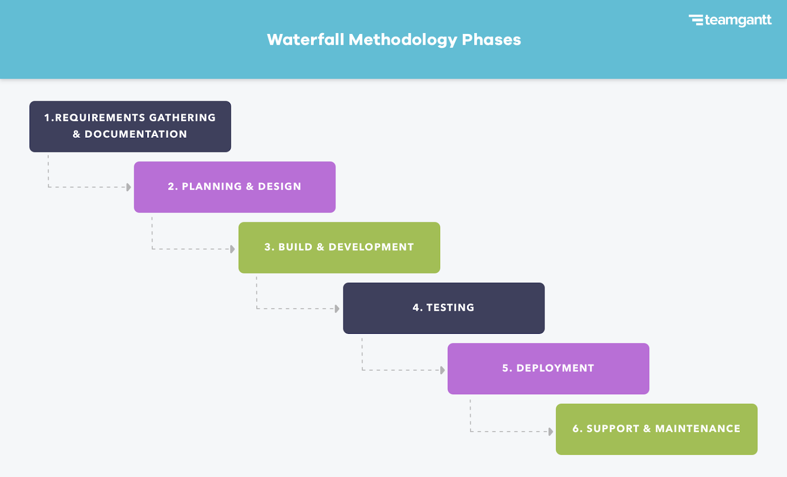

Overview
Waterfall is a traditional SDLC methodology where each phase is completed before moving to the next. It works best when requirements are clear and unlikely to change.
How It Works
- Requirements
- Design
- Implementation
- Testing
- Deployment
- Maintenance
Pros and Cons
Pros
- Clear structure and documentation
- Easier to manage with fixed requirements
- Good for regulated or contract-driven projects
Cons
- Hard to change requirements mid-project
- Issues may be discovered late during testing
- Less feedback from users during development
Waterfall Diagram
